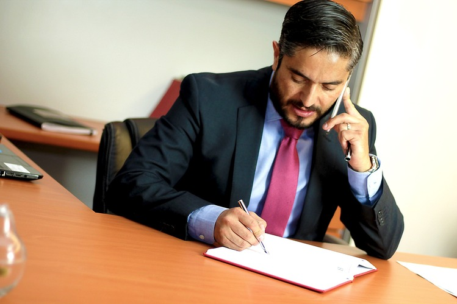

S kým máte tu čest?
Jakub Slánský
V letech 2010 – 2015 jsem studoval na Právnické fakultě Masarykovy univerzity v Brně.
Již v průběhu studií jsem absolvoval přibližně dvouletou praxi v okresním úřadě, kde se mi podařilo získat velmi důležité znalosti v oblasti občanského práva.
Následně jsem si svou praxi prohluboval ve středně velkých advokátních kancelářích.
Jsem příznivcem efektivního a rychlého řešení sporů, který šetří nejen čas, ale hlavně vaše finance. Rád proto volím pouze takové prostředky, které jsou pro klienta skutečně přínosné. Obecně preferuji uzavření dohod a v rodinných záležitostech se snažím klienty vést tím směrem, aby upřednostňovali zájmy svých dětí nad svými vlastními.
Otevření vlastní advokátní praxe:
V roce 2015 jsem úspěšně složil advokátní zkoušky s prospěchovým stupněm výtečně a otevřel si vlastní advokátní praxi v Pardubicích. Působím také na pobočce ve Vysokém Mýtě. Poskytuji právní služby ve všech oblastech práva se specializací na právo trestní-procesní, občanské, rodinné, pracovní a obchodní.
Hloubkově se věnuji především problematice převodů nemovitostí, rozvodů, oblasti péče o nezletilé děti a výživného, přípravě smluv v občanských i obchodních věcech a pracovněprávní problematice z pohledu zaměstnance i zaměstnavatele.
Při poskytování právních služeb kladu velký důraz na zachování morálních pravidel a dále na dodržování zákona o advokacii a stavovských předpisů České advokátní komory. Dále si zakládám na důvěrnosti mezi mnou a klientem, tu považuji za stěžejní faktor při vzájemné spolupráci.
JUDR. Jakub Slánský